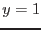
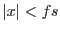
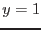
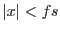

This function may be performed alone by calling the script with entrystage and finalstage=`makerateimg'.
The process of converting the list of source positions and fluxes into a realistic XMM-Newton image consists of three stages:
The present function performs the first of these stages. Essentially this is done by adding an appropriate Point Spread Function (PSF) to the image for each sky location in the input source list. Ideally this would be done by reading a PSF from the XMM-Newton calibration data (the CCF). However in practice one finds that accessing this data is rather slow. Since there may be tens of thousands of simulated sources in the list, it is desirable to find some better procedure. For this reason it has been decided to use the CCF PSF only for those sources which are brighter than a user-settable flux level. For sources fainter than this level, the following axially-symmetric King function is used:
As said, the flux cutoff is a free parameter fluxcutoff of the eimsim script; the user is however advised to choose a value such that the proper, CCF PSF is used for all sources bright enough to be detectable. A few preliminary runs of eimsim may be required to determine a safe value.
Another point to consider is the size of the PSF `patches' which are added to the image. There are two related issues:
The PSF array size in eimsim is at present `hard-wired' to the value of 21 by 21 pixels. The PSF parameters used for the faint sources result in a PSF which drops to about 9% of its central value at these array edges.
The feathering function chosen, let's call it  , is a piecewise inverted parabola, viz:
 for
,
, is a piecewise inverted parabola, viz:
 for
,
The effect of the feathering on the PSF is illustrated schematically in figures 1 to 3.
The bright sources are applied by use of the (XMM-specific) task esrcmap. This task obtains the PSF from the XMM calibration data via the cal library interface call CAL_getPSF, with the cal state variable accuracyLevel set to ACCURACY_MEDIUM. This returns a PSF which is interpolated from samples generated via a ray-tracing method. The source-detection task emldetect uses the same PSF by default.
The faint sources are added to the image by use of the non-XMM-specific equivalent task srcmap. This task uses the same PSF for each source, namely a King function. The relevant scale values are settable via srcmap, but not eimsim, parameters.
In order to preserve something close to realistic statistics in the background, it is usual to include, in the list of simulated sources, a large fraction which are too faint to be detected. This carpet of faint, confused sources supplies the desired `lumpiness', but at the cost of raising the average level of vignetted background. The approximate amount of the added background (in terms of flux in the simulated source energy band per unit sky area) can be estimated either from the first plot created by eimsimcompleteness, or by use of faintbackcalc. Once the added flux per square arcsec is known, it can be subtracted from the source images by use of eimsim (and srcmap) parameters withfluxoffset and fluxoffset.